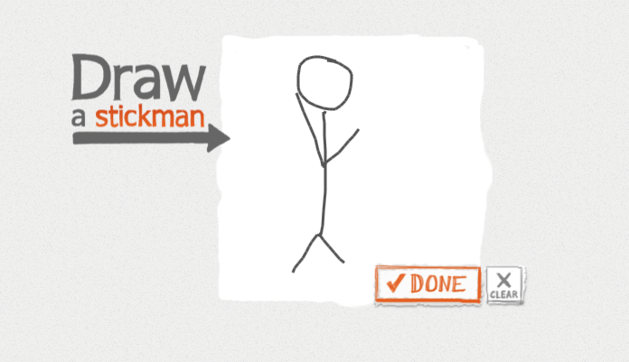

This website has a great navigation as well as great graphics which makes this site both amusing and successful. When you first enter the site you get to pick from the different categories and when hovering over a section it flips and you are able to see a different image. This website is innovative in the way that it leads you trough the site. It is easy to follow for any age and once selecting a section it highlighted and the rest of the sight is blurred.
The website its self seems to be great for keeping things organized an simple. I love how simple it is and graphics because it makes the page more exciting. The loading symbol matches the boxes on the sight which also gives it a nice flow.
Why I choose the website Draw a Stickman is because of its uniqueness and cool navigation. When you first enter the website you as the view get to create your own personal stickman which makes it cool to see ur piece come to life. The entire website requires you to continue to draw and create a story for your caracter. Though the site does not have a lot of graphic the ones that they do are amazing because they are your own.
Learning how to use this navigational tool in future would amazing because I love the fact that website can be different every time you go on it. The website is perfect for people who are bored and it makes viewer engaged in the content. After logging in to this site I realize how important it is to grasp the viewers attention. They did an amazing job with this site.
